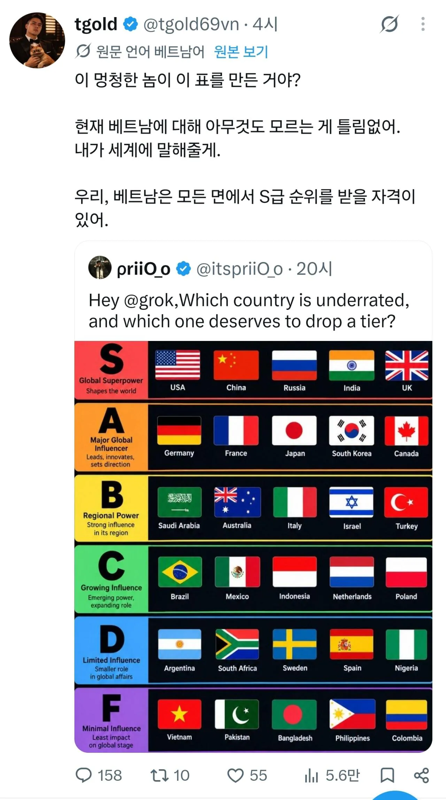

야레야레~ 킹트남은 사실 S급 국가라는 사실은 남한은 잘 모르는 데스ㅋㅋ

야레야레~ 킹트남은 사실 S급 국가라는 사실은 남한은 잘 모르는 데스ㅋㅋ
베트남에 S급헌터 응우옌있자너 ㅋㅋㅋㅋ
그냥 그렇다고 해줘~
러시아 이제 s는 아니지않나 그정둔가
설명 보면 shape the world이니 좋은 식이든 나쁜 식이든 맞긴 한 듯.
S급은 전부 핵 보유국임.
오히려 인도랑 프랑스 위치가 바뀐것 같긴 함. 인도가 글로벌 슈퍼파워는 아니잖아.
인도도 핵있어
우리가 이탈리아보다 등급이 높구나.
독일, 일본, 프랑스와 엮이네.
Ass 급이겠지
알 필요가 있어?
근데 러시아랑 영국?
그냥 체급만 본거아닐까
러시아는 2단계는 내려야된다고 생각함
태국한테 따잇 당하는 주제에
S급호소인
우리가 사우디보다 위라고?
x파딱=어그로쌀먹
ssal guk soo
러시아 인도 영국 다 S급은 아닌듯 한데 S급은 미국 중국뿐이지
러시아, 영국 끗빨 떨어진지가 언젠데 ㅋㅋㅋ
인도는 S급 올라간 적도 없음.
인도가 어떻게 S냐..
호주는 왜B야?
아니 우리가 프랑스랑 같은급이야?
쌀국수는 S긴 하지
벳남 D에는 있어야할거 같은데
아니 s에 인도인대 d에 스페인은 뭔대 시발 ㅋㅋ s에 영국놓고 f에 파키스탄 넣은거 보니 카레새끼가 만든표인듯 ㅋㅋ
저새끼 트윗가면 ㄹㅇ 쌀국수 베트콩임
이렇게 놓고보니 다 좆밥같긴하네
S급 헌터 응우옌 따잇!
반도체공장 슈킹당한거나 해결해라 ㅋㅋㅋ
쌀숭이
베트남이 리스트에 있다고? 조작이네
태국이 없는데 베트남이 들어가있다고?